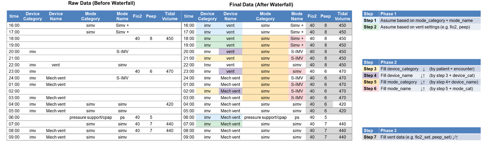

Respiratory Support Waterfall Processing¶
The waterfall method provides a sophisticated data cleaning and imputation pipeline for respiratory support data, ensuring continuous and complete ventilator records for analysis.
Overview¶
The waterfall processing transforms raw, sparse respiratory support data into a dense, analysis-ready dataset by: - Creating hourly scaffolds for continuous timelines - Inferring missing device and mode information - Forward-filling numeric values within ventilation episodes - Applying clinical logic and heuristics

Usage¶
Basic Usage¶
from clifpy.tables.respiratory_support import RespiratorySupport
# Load your respiratory support data
resp_support = RespiratorySupport.from_file(
data_directory="/path/to/data",
filetype="parquet"
)
# Apply waterfall processing
processed = resp_support.waterfall()
# The result is a new RespiratorySupport instance
processed.validate() # Validate the processed data
df = processed.df # Access the DataFrame
Advanced Options¶
# Enable backward fill for numeric values
processed = resp_support.waterfall(bfill=True)
# Use a different ID column for grouping
processed = resp_support.waterfall(id_col="patient_id")
# Get just the DataFrame
df = resp_support.waterfall(return_dataframe=True)
# Silent mode (no progress messages)
processed = resp_support.waterfall(verbose=False)
Timezone Handling¶
The waterfall function expects data in UTC timezone. If your data is in a different timezone, it will be automatically converted:
# Your data is in US/Eastern
processed = resp_support.waterfall(verbose=True)
# Output: "Converting timezone from US/Eastern to UTC for waterfall processing"
Processing Pipeline¶
The waterfall processing consists of five phases:
Phase 0: Initialize & Build Hourly Scaffold¶
- Lower-case all text columns - Standardizes device and mode names for consistent matching
- Coerce numeric setters to floats - Ensures all numeric columns have proper data types
- Scale FiO₂ if needed - Corrects common documentation errors (e.g., 40 → 0.40)
- Create hourly scaffold - Inserts synthetic rows at HH:59:59 for each hour
- Ensures every patient has a dense, regular timeline
- Vital for plots, per-hour metrics, and length-of-stay calculations
- These scaffold rows serve as "landing spots" for forward-fill operations
Phase 1: Device/Mode Heuristics¶
Applies intelligent rules to repair missing device and mode labels:
- IMV from mode strings - Infers invasive mechanical ventilation from mode categories
- Look-ahead/behind logic - Uses surrounding context to fill gaps
- Device-specific repairs:
- BiPAP device name standardization
- Nasal cannula PEEP guards
- Mode category inference
- Data cleaning:
- Removes rows with no usable information
- Handles timestamp duplicates
- Prioritizes non-NIPPV entries when duplicates exist
Phase 2: Hierarchical IDs¶
Creates four nested run-length identifiers within each encounter:
- Each ID increments when its label or parent ID changes
- Enables tracking of ventilation episodes and mode transitions
- Provides grouping keys for the numeric fill phase
Example progression:
Time Device_Category Device_Cat_ID Mode_Category Mode_Cat_ID
10:00 IMV 1 AC/VC 1
11:00 IMV 1 AC/VC 1
12:00 IMV 1 SIMV 2 ← mode change
13:00 NIPPV 2 CPAP 3 ← device change
Phase 3: Numeric Waterfall¶
Performs intelligent filling of numeric values within each mode_name_id block:
- Forward-fill by default - Carries last known settings forward
- Optional backward-fill - When
bfill=True, also fills backwards - Special handling:
- FiO₂ defaults to 0.21 for room air
- Tidal volume blanked for pressure support modes
- Trach collar acts as a "breaker" for fills
- Preserves clinical logic - Respects mode transitions and device changes
Phase 4: Final Tidy-up¶
- De-duplicate rows - Ensures one row per timestamp
- Sort chronologically - Orders by encounter and time
- Forward-fill tracheostomy flag - Carries trach status through entire encounter
- Clean up helper columns - Removes temporary calculation fields
- Preserve scaffold indicator -
is_scaffoldcolumn marks synthetic rows
Output Format¶
The processed DataFrame includes:
Original Columns (cleaned and filled)¶
- All original respiratory support columns
- Numeric values filled within appropriate contexts
- Categorical values standardized and inferred
New Columns¶
device_cat_id- Device category episode IDdevice_id- Device instance episode IDmode_cat_id- Mode category episode IDmode_name_id- Mode instance episode IDis_scaffold- Boolean flag for synthetic hourly rows
Example¶
import pandas as pd
from clifpy.tables.respiratory_support import RespiratorySupport
# Sample data with gaps
data = pd.DataFrame({
'hospitalization_id': ['H001', 'H001', 'H001'],
'recorded_dttm': pd.to_datetime([
'2023-01-01 10:30',
'2023-01-01 14:15', # 4-hour gap
'2023-01-01 15:00'
]).tz_localize('UTC'),
'device_category': ['imv', None, 'imv'], # Missing value
'fio2_set': [0.5, None, 0.4],
'peep_set': [8, None, 10],
# ... other columns
})
# Create instance and process
rs = RespiratorySupport(data=data)
processed = rs.waterfall()
# Result will have:
# - Hourly rows at 11:59:59, 12:59:59, 13:59:59
# - Device category filled for 14:15 row
# - FiO₂ and PEEP carried forward through gaps
# - Hierarchical IDs tracking ventilation episodes
Clinical Considerations¶
- Scaffold rows are synthetic - Filter by
is_scaffold == Falsefor actual observations - Fills respect clinical boundaries - Values don't cross mode/device transitions
- Room air defaults - FiO₂ set to 0.21 (21%) for room air observations
- Tracheostomy persistence - Once documented, carries through admission
Performance Notes¶
- Processing time scales with number of encounters and data density
- Memory usage increases due to hourly scaffold creation
- Consider processing in batches for very large datasets
See Also¶
- Respiratory Support Table - Table schema and validation
- Wide Dataset Creation - Creating analysis-ready datasets
- Data Validation - Understanding validation errors
- Timezone Handling - Working with different timezones